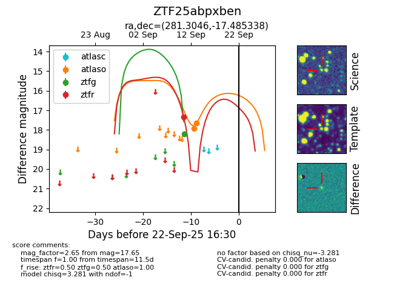
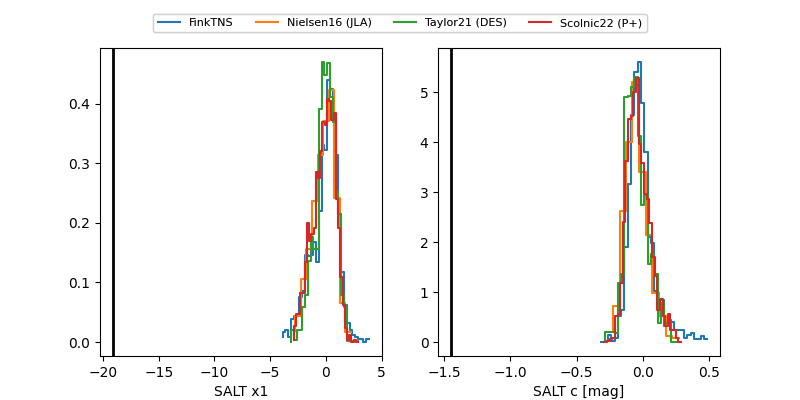

FINK: ZTF25abpxben
Lasair: ZTF25abpxben
ALeRCE: ZTF25abpxben
ZTF25abpxben (ztf,fink)
equatorial (ra, dec) = (281.3046,-17.48534)
galactic (l, b) = (16.6097,-6.54436)


last atlaso=17.65, ztfg=18.21, ztfr=17.35
2 atlaso, 1 ztfg, 1 ztfr detections